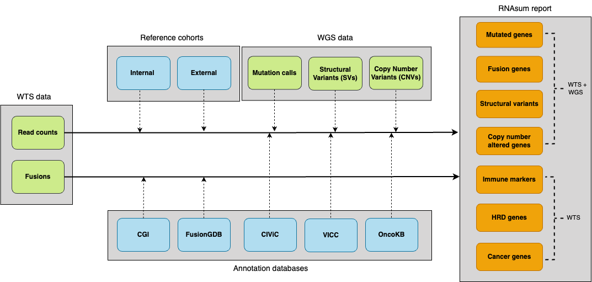

RNAsum is an R package for integrating and interpreting whole-genome sequencing (WGS) and whole-transcriptome sequencing (WTS) data from individual cancer patient samples.
DOCS: https://umccr.github.io/RNAsum
Installation
RNAsum can be installed using one of the following three methods.
A. Install from GitHub
- R package can be installed directly from the GitHub source:
1. System Dependencies (Prerequisites)
RNAsum depends on pdftools, which requires system-level libraries (poppler, cairo, etc.) to be installed before installing the R package.
For Linux (Ubuntu/Debian):
sudo apt-get install libpoppler-cpp-dev libharfbuzz-dev libfribidi-dev libfreetype6-dev libcairo2-dev libpango1.0-devFor macOS:
brew install popplerFor Conda / HPC Environments If you do not have root access (e.g., on a cluster), creating a fresh Conda environment is the most reliable way to provide necessary system libraries:
# Create a dedicated environment with R and system libraries
conda create -n rnasum_env -c conda-forge -c bioconda \
r-base=4.1 \
poppler harfbuzz fribidi freetype pkg-config cairo openssl pango make gxx_linux-64
# Activate the environment
conda activate rnasum_env2. Install R Package
Once system dependencies are met, you can install the package directly from GitHub.
Note: The reference data package (RNAsum.data) is large. It is recommended to increase the download timeout limit before installation. Launch R:
RThen run the following inside the R console:
# 1. Increase timeout to prevent download failure for RNAsum.data
options(timeout = 600)
# 2. Install via remotes
# (This will automatically resolve CRAN, Bioconductor, and GitHub dependencies)
if (!require("remotes")) install.packages("remotes")
remotes::install_github("umccr/RNAsum") # latest main commit
remotes::install_github("umccr/RNAsum@v0.0.X") # version 0.0.X
remotes::install_github("umccr/RNAsum@abcde") # commit abcde
remotes::install_github("umccr/RNAsum#123") # PR 123B. Install from Conda
- Conda package is available from the Anaconda umccr channel:
conda create -n rnasum -c umccr -c conda-forge -c bioconda r-rnasum
conda activate rnasumC. Install from Docker
- Docker image is available from the GitHub Container Registy:
docker pull ghcr.io/umccr/rnasum:latestWorkflow
The pipeline consists of five main components illustrated and briefly described below. For more details, see workflow.md.

- Collect patient WTS data including per-gene read counts and gene fusions.
- Add expression data from reference cohorts to get an idea about the expression levels of genes of interest in other cancer patient cohorts. The read counts are normalised, transformed and converted into a scale that allows to present the patient’s expression measurements in the context of the reference cohorts.
- Supply genome-based findings from whole-genome sequencing (WGS) data to focus on genes of interest and to provide additional evidence for dysregulation of mutated genes, or genes located within detected structural variants (SVs) or copy-number (CN) altered regions.
RNAsumis designed to be compatible with WGS patient outputs generated fromumccrise. - Collate results with knowledge derived from in-house resources and public databases to provide additional sources of evidence for clinical significance of altered genes e.g. to flag variants with clinical significance or potential druggable targets.
- The final product is an interactive HTML report with searchable tables and plots presenting expression levels of the genes of interest. The report consists of several sections described here.
Reference data
The reference expression data are available for 33 cancer types and were derived from external (TCGA) and internal (CCGCM) resources.
External reference cohorts
In order to explore expression changes in the patient, we have built a high-quality external cancer reference cohort.
Depending on the tissue from which the patient’s sample was taken, one of 33 cancer datasets from TCGA can be used as a reference cohort for comparing expression changes in genes of interest of the patient. Additionally, 10 samples from each of the 33 TCGA datasets were combined to create the Pan-Cancer dataset, and for some cohorts extended sets are also available. All available datasets are listed in the TCGA projects summary table. These datasets have been processed using methods described in the TCGA-data-harmonization repository. The dataset of interest can be specified by using one of the TCGA project IDs for the RNAsum --dataset argument (see Examples).
Internal reference cohort
The publicly available TCGA datasets are expected to demonstrate prominent batch effects when compared to the in-house WTS data due to differences in applied experimental procedures and analytical pipelines. Moreover, TCGA data may include samples from tissue material of lower quality and cellularity compared to samples processed using local protocols. To address these issues, we have built a high-quality internal reference cohort processed using the same pipelines as input data (see data pre-processing).
This internal reference set of 40 pancreatic cancer samples is based on WTS data generated at CCGCM and processed with the in-house RNA-seq pipeline to minimise potential batch effects between investigated samples and the reference cohort and to make sure the data are comparable. The internal reference cohort assembly is summarised in the Pancreatic-data-harmonization repository.
Usage
rnasum_cli=$(Rscript -e 'cat(system.file("cli", package="RNAsum"))')
ln -sf "$rnasum_cli/rnasum.R" "$rnasum_cli/rnasum"
export PATH="$rnasum_cli:$PATH"$ rnasum --version
2.0.0
$ rnasum --helpOptions
--arriba_dir: Directory path to Arriba results containing fusions.pdf and fusions.tsv
--arriba_pdf: File path of Arriba PDF output
--arriba_tsv: File path of Arriba TSV output
--batch_rm: Remove batch-associated effects between datasets
--cn_gain: CN threshold value to classify genes within gained regions [def: 95]
--cn_loss: CN threshold value to classify genes within lost regions [def: 5]
--dataset: Dataset to be used as external reference cohort [def: PANCAN]
--dataset_name_incl: Include dataset in report name
--dragen_fusions: File path to DRAGEN RNA-seq 'fusion_candidates.final' output
--dragen_mapping_metrics: File path to DRAGEN RNA-seq 'mapping_metrics.csv' output
--dragen_wts_dir: Directory path to DRAGEN RNA-seq results
--drugs: Include drug matching section in report
--filter: Filter out low expressed genes
--immunogram: Include immunogram in report
--log: Log2 transform data before normalisation
--norm: Normalisation method
--pcgr_splice_vars: Include non-coding splice region variants reported in PCGR
--pcgr_tier: Tier threshold for reporting variants reported in PCGR [def: 4]
--pcgr_tiers_tsv: File path to PCGR 'snvs_indels.tiers.tsv' output
--project: Project name, used for annotation purposes only
--purple_gene_tsv: File path to PURPLE 'purple.cnv.gene.tsv' output
--report_dir: Directory path to output report
--salmon: File path to salmon 'quant.genes.sf' output
--kallisto: File path to kallisto 'abundance.tsv' output
--sample_name: Sample name to be presented in report
--sample_source: Type of investigated sample [def: -]
--save_tables: Save interactive summary tables as HTML
--scaling: Scaling for z-score transformation (gene-wise or group-wise) [def: gene-wise]
--subject_id: Subject ID
--sv_tsv: File path to text file with genes related to structural variation
--top_genes: Number of top ranked genes to be presented in report
--transform: Transformation method to be used when converting read counts [def: CPM]
--umccrise: Directory path of the corresponding WGS-related umccrise data
--version, -v: Print RNAsum version and exit
--help, -h: Show this help message and exit
Note
Human reference genome GRCh38 (Ensembl based annotation version 105) is used for gene annotation by default. GRCh37 is no longer supported.
Examples
Below are RNAsum CLI commands for generating HTML reports under different data availability scenarios:
Note
- Example data is provided in the
/inst/rawdata/test_datafolder of the GitHub [repo][rnasum-gh]. - The
RNAsumruntime should be less than 15 minutes using 16GB RAM memory and 1 CPU.
1. WTS and WGS data
This is the most frequent and preferred case, in which the WGS-based findings will be used as a primary source for expression profile prioritisation. The genome-based results can be incorporated into the report by specifying the location of the corresponding output files (e.g. results from PCGR, PURPLE, and Manta). The Mutated genes, Structural variants and CN altered genes report sections will contain information about expression levels of the mutated genes, genes located within detected SVs and CN altered regions, respectively. The results in the Fusion genes section will be ordered based on the evidence from genome-based data. A subset of the TCGA pancreatic adenocarcinoma dataset is used as reference cohort (--dataset TEST).
cd $rnasum_cli
rnasum \
--sample_name test_sample_WTS \
--dataset TEST \
--salmon "$PWD/../rawdata/test_data/dragen/TEST.quant.genes.sf" \
--arriba_pdf "$PWD/../rawdata/test_data/dragen/arriba/fusions.pdf" \
--arriba_tsv "$PWD/../rawdata/test_data/dragen/arriba/fusions.tsv" \
--dragen_fusions "$PWD/../rawdata/test_data/dragen/test_sample_WTS.fusion_candidates.final" \
--pcgr_tiers_tsv "$PWD/../rawdata/test_data/umccrised/test_sample_WGS/small_variants/TEST-somatic.pcgr.snvs_indels.tiers.tsv" \
--purple_gene_tsv "$PWD/../rawdata/test_data/umccrised/test_sample_WGS/purple/TEST.purple.cnv.gene.tsv" \
--sv_tsv "$PWD/../rawdata/test_data/umccrised/test_sample_WGS/structural/TEST-manta.tsv" \
--report_dir "$PWD/../rawdata/test_data/RNAsum" \
--save_tables FALSE \
--filter TRUEThe HTML report test_sample_WTS.RNAsum.html will be created in the inst/rawdata/test_data/dragen/RNAsum folder.
2. WTS data only
In this scenario, only WTS data will be used and only expression levels of key Cancer genes, Fusion genes, Immune markers and homologous recombination deficiency genes (HRD genes) will be reported. Moreover, gene fusions reported in the Fusion genes report section will not contain information about evidence from genome-based data. A subset of the TCGA pancreatic adenocarcinoma dataset is used as the reference cohort (--dataset TEST).
cd $rnasum_cli
rnasum \
--sample_name test_sample_WTS \
--dataset TEST \
--salmon "$PWD/../rawdata/test_data/dragen/TEST.quant.genes.sf" \
--arriba_pdf "$PWD/../rawdata/test_data/dragen/arriba/fusions.pdf" \
--arriba_tsv "$PWD/../rawdata/test_data/dragen/arriba/fusions.tsv" \
--report_dir "$PWD/../rawdata/test_data/RNAsum" \
--save_tables FALSE \
--filter TRUEThe output HTML report test_sample_WTS.RNAsum.html will be created in the inst/rawdata/test_data/dragen/RNAsum folder.
Output
The pipeline generates a HTML Patient Transcriptome Summary report and a results folder:
|
|____<output>
|____<SampleName>.<output>.html
|____results
|____exprTables
|____glanceExprPlots
|____...Report
The generated HTML report includes searchable tables and interactive plots presenting expression levels of altered genes, as well as links to public resources describing the genes of interest.
Detailed description of the report structure, including result prioritisation and visualisation is available here.
Results
The results folder contains intermediate files, including plots and tables that are presented in the HTML report.
Code of Conduct
The code of conduct can be accessed here.
Citation
To cite package ‘RNAsum’ in publications use:
Kanwal S, Marzec J, Diakumis P, Hofmann O, Grimmond S (2024). “RNAsum: An R package to comprehensively post-process, summarise and visualise genomics and transcriptomics data.” version 1.1.0, https://umccr.github.io/RNAsum/.
A BibTeX entry for LaTeX users is
@Unpublished{,
title = {RNAsum: An R package to comprehensively post-process, summarise and visualise genomics and transcriptomics data},
author = {Sehrish Kanwal and Jacek Marzec and Peter Diakumis and Oliver Hofmann and Sean Grimmond},
year = {2024},
note = {version 1.1.0},
url = {https://umccr.github.io/RNAsum/},
}